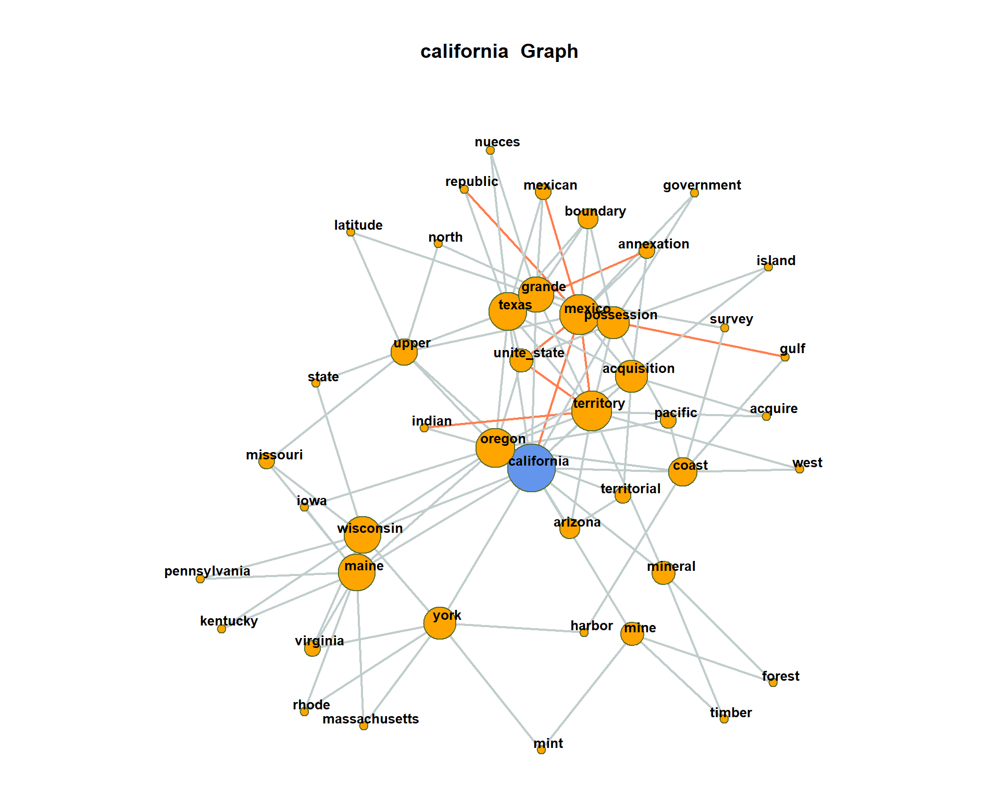
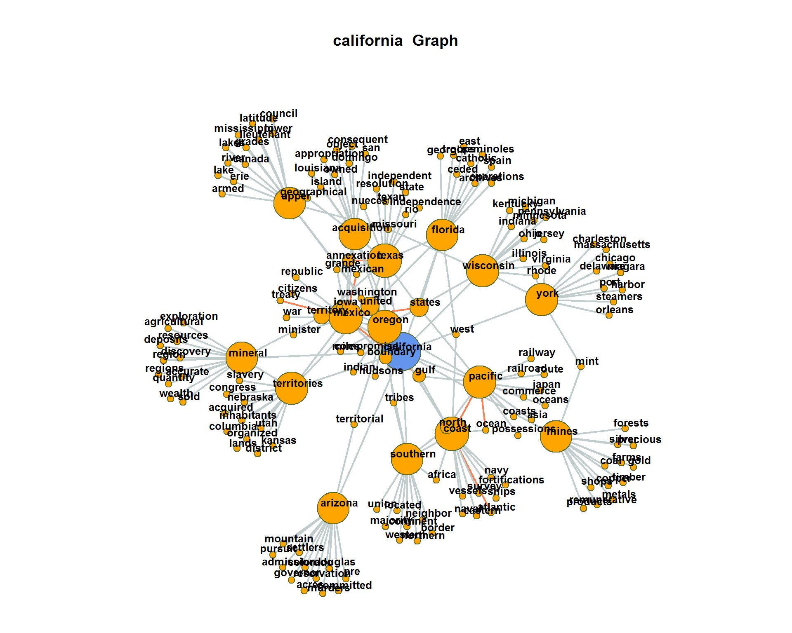
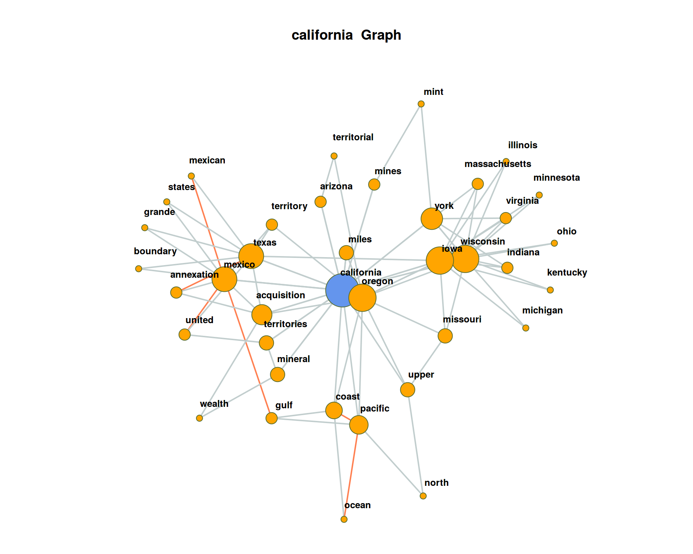
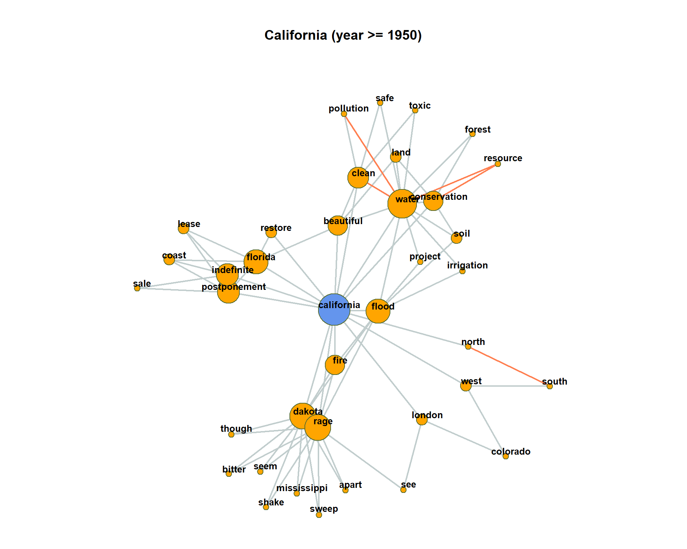

This exercise will demonstrate how to perform co-occurrence analysis with R and the quanteda-package. It is shown how different significance measures can be used to extract semantic links between words.
Change to your working directory, create a new R script, load the quanteda-package and define a few already known default variables.
options(stringsAsFactors = FALSE)
library(quanteda)
textdata <- read.csv("data/sotu.csv", sep = ";", encoding = "UTF-8")
sotu_corpus <- corpus(textdata$text, docnames = textdata$doc_id, docvars = data.frame(year = substr(textdata$date, 0, 4)))The separation of the text into semantic analysis units is important for co-occurrence analysis. Context windows can be for instance documents, paragraphs or sentences or neighboring words. One of the most frequently used context window is the sentence.
Documents are decomposed into sentences. Sentences are defined as a separate (quasi-)documents in a new corpus object of the quanteda-package. The further application of the quanteda-package functions remains the same. In contrast to previous exercises, however, we now use sentences which are stored as individual documents in the body.
Important: The sentence segmentation must take place before the other preprocessing steps because the sentence-segmentation-model relies on intact word forms and punctuation marks.
The following code uses a quanteda function to reshape the corpus into sentences.
# original corpus length and its first document
ndoc(sotu_corpus)## [1] 233substr(texts(sotu_corpus)[1], 0, 200)## 1
## "Fellow-Citizens of the Senate and House of Representatives:\n\nI embrace with great satisfaction the opportunity which now presents itself\nof congratulating you on the present favorable prospects of our"corpus_sentences <- corpus_reshape(sotu_corpus, to = "sentences")
ndoc(corpus_sentences)## [1] 62735texts(corpus_sentences)[1]## 1.1
## "Fellow-Citizens of the Senate and House of Representatives: I embrace with great satisfaction the opportunity which now presents itself of congratulating you on the present favorable prospects of our public affairs."texts(corpus_sentences)[2]## 1.2
## "The recent accession of the important state of North Carolina to the Constitution of the United States (of which official information has been received), the rising credit and respectability of our country, the general and increasing good will toward the government of the Union, and the concord, peace, and plenty with which we are blessed are circumstances auspicious in an eminent degree to our national prosperity."CAUTION: The newly decomposed corpus has now reached a considerable size of 62735 sentences. Older computers may get in trouble because of insufficient memory during this preprocessing step.
Now we are returning to our usual pre-processing chain and apply it on the separated sentences.
# Build a dictionary of lemmas
lemma_data <- read.csv("resources/baseform_en.tsv", encoding = "UTF-8")
# read an extended stop word list
stopwords_extended <- readLines("resources/stopwords_en.txt", encoding = "UTF-8")
# Preprocessing of the corpus of sentences
corpus_tokens <- corpus_sentences %>%
tokens(remove_punct = TRUE, remove_numbers = TRUE, remove_symbols = TRUE) %>%
tokens_tolower() %>%
tokens_replace(lemma_data$inflected_form, lemma_data$lemma, valuetype = "fixed") %>%
tokens_remove(pattern = stopwords_extended, padding = T)
# calculate multi-word unit candidates
sotu_collocations <- textstat_collocations(corpus_tokens, min_count = 25)
sotu_collocations <- sotu_collocations[1:250, ]
corpus_tokens <- tokens_compound(corpus_tokens, sotu_collocations)Again, we create a document-term-matrix. Only word forms which occur at least 10 times should be taken into account. An upper limit is not set (Inf = infinite).
Additionally, we are interested in the joint occurrence of words in a sentence. For this, we do not need the exact count of how often the terms occur, but only the information whether they occur together or not. This can be encoded in a binary document-term-matrix. The parameter weighting in the control options calls the weightBin function. This writes a 1 into the DTM if the term is contained in a sentence and 0 if not.
minimumFrequency <- 10
# Create DTM, prune vocabulary and set binary values for presence/absence of types
binDTM <- corpus_tokens %>%
tokens_remove("") %>%
dfm() %>%
dfm_trim(min_docfreq = minimumFrequency, max_docfreq = Inf) %>%
dfm_weight("boolean")The counting of the joint word occurrence is easily possible via a matrix multiplication (https://en.wikipedia.org/wiki/Matrix_multiplication) on the binary DTM. For this purpose, the transposed matrix (dimensions: nTypes x nDocs) is multiplied by the original matrix (nDocs x nTypes), which as a result encodes a term-term matrix (dimensions: nTypes x nTypes).
# Matrix multiplication for cooccurrence counts
coocCounts <- t(binDTM) %*% binDTMLet’s look at a snippet of the result. The matrix has nTerms rows and columns and is symmetric. Each cell contains the number of joint occurrences. In the diagonal, the frequencies of single occurrences of each term are encoded.
as.matrix(coocCounts[202:205, 202:205])## distant post-office agree opinion
## distant 163 1 0 0
## post-office 1 38 0 0
## agree 0 0 310 7
## opinion 0 0 7 463Interprete as follows: agree appears together 7 times with opinion in the 62735 sentences of the SUTO addresses. agree alone occurs 310 times.
In order to not only count joint occurrence we have to determine their significance. Different significance-measures can be used. We need also various counts to calculate the significance of the joint occurrence of a term i (coocTerm) with any other term j: * k - Number of all context units in the corpus * ki - Number of occurrences of coocTerm * kj - Number of occurrences of comparison term j * kij - Number of joint occurrences of coocTerm and j
These quantities can be calculated for any term coocTerm as follows:
coocTerm <- "spain"
k <- nrow(binDTM)
ki <- sum(binDTM[, coocTerm])
kj <- colSums(binDTM)
names(kj) <- colnames(binDTM)
kij <- coocCounts[coocTerm, ]An implementation in R for Mutual Information, Dice, and Log-Likelihood may look like this. At the end of each formula, the result is sorted so that the most significant co-occurrences are at the first ranks of the list.
########## MI: log(k*kij / (ki * kj) ########
mutualInformationSig <- log(k * kij / (ki * kj))
mutualInformationSig <- mutualInformationSig[order(mutualInformationSig, decreasing = TRUE)]
########## DICE: 2 X&Y / X + Y ##############
dicesig <- 2 * kij / (ki + kj)
dicesig <- dicesig[order(dicesig, decreasing=TRUE)]
########## Log Likelihood ###################
logsig <- 2 * ((k * log(k)) - (ki * log(ki)) - (kj * log(kj)) + (kij * log(kij))
+ (k - ki - kj + kij) * log(k - ki - kj + kij)
+ (ki - kij) * log(ki - kij) + (kj - kij) * log(kj - kij)
- (k - ki) * log(k - ki) - (k - kj) * log(k - kj))
logsig <- logsig[order(logsig, decreasing=T)]The result of the four variants for the statistical extraction of co-occurrence terms is shown in a data frame below. It can be seen that frequency is a bad indicator of meaning constitution. Mutual information emphasizes rather rare events in the data. Dice and Log-likelihood yield very well interpretable contexts.
# Put all significance statistics in one Data-Frame
resultOverView <- data.frame(
names(sort(kij, decreasing=T)[1:10]), sort(kij, decreasing=T)[1:10],
names(mutualInformationSig[1:10]), mutualInformationSig[1:10],
names(dicesig[1:10]), dicesig[1:10],
names(logsig[1:10]), logsig[1:10],
row.names = NULL)
colnames(resultOverView) <- c("Freq-terms", "Freq", "MI-terms", "MI", "Dice-Terms", "Dice", "LL-Terms", "LL")
print(resultOverView)## Freq-terms Freq MI-terms MI Dice-Terms Dice LL-Terms LL
## 1 spain 443 spain 4.95 spain 1.0000 cuba 256.4
## 2 unite_state 138 amistad 4.04 cuba 0.1434 unite_state 246.3
## 3 government 125 antilles 4.04 spanish 0.1072 spanish 163.6
## 4 treaty 59 madrid 3.89 france 0.0840 government 124.9
## 5 make 57 catholic 3.89 island 0.0736 treaty 121.3
## 6 cuba 53 queen 3.85 colony 0.0734 france 116.2
## 7 part 49 autonomy 3.57 florida 0.0710 claim 107.0
## 8 claim 47 cede 3.55 madrid 0.0691 madrid 106.2
## 9 war 46 adventurer 3.52 claim 0.0669 island 103.7
## 10 country 43 spoliations 3.41 treaty 0.0646 florida 96.3In the following, we create a network visualization of significant co-occurrences.
For this, we provide the calculation of the co-occurrence significance measures, which we have just introduced, as single function in the file calculateCoocStatistics.R. This function can be imported into the current R-Session with the source command.
# Read in the source code for the co-occurrence calculation
source("calculateCoocStatistics.R")
# Definition of a parameter for the representation of the co-occurrences of a concept
numberOfCoocs <- 15
# Determination of the term of which co-competitors are to be measured.
coocTerm <- "california"We use the imported function calculateCoocStatistics to calculate the co-occurrences for the target term “california”.
coocs <- calculateCoocStatistics(coocTerm, binDTM, measure="LOGLIK")
# Display the numberOfCoocs main terms
print(coocs[1:numberOfCoocs])## oregon mexico texas mineral upper territory
## 255.8 157.8 55.3 54.4 51.5 47.3
## wisconsin arizona acquisition possession coast mine
## 42.7 41.6 40.6 36.6 36.0 35.8
## grande york maine
## 35.7 34.9 33.8To acquire an extended semantic environment of the target term, ‘secondary co-occurrence’ terms can be computed for each co-occurrence term of the target term. This results in a graph that can be visualized with special layout algorithms (e.g. Force Directed Graph).
Network graphs can be evaluated and visualized in R with the igraph-package. Any graph object can be created from a three-column data-frame. Each row in that data-frame is a triple. Each triple encodes an edge-information of two nodes (source, sink) and an edge-weight value.
For a term co-occurrence network, each triple consists of the target word, a co-occurring word and the significance of their joint occurrence. We denote the values with from, to, sig.
resultGraph <- data.frame(from = character(), to = character(), sig = numeric(0))The process of gathering the network for the target term runs in two steps. First, we obtain all significant co-occurrence terms for the target term. Second, we obtain all co-occurrences of the co-occurrence terms from step one.
Intermediate results for each term are stored as temporary triples named tmpGraph. With the rbind command (“row bind”, used for concatenation of data-frames) all tmpGraph are appended to the complete network object stored in resultGraph.
# The structure of the temporary graph object is equal to that of the resultGraph
tmpGraph <- data.frame(from = character(), to = character(), sig = numeric(0))
# Fill the data.frame to produce the correct number of lines
tmpGraph[1:numberOfCoocs, 3] <- coocs[1:numberOfCoocs]
# Entry of the search word into the first column in all lines
tmpGraph[, 1] <- coocTerm
# Entry of the co-occurrences into the second column of the respective line
tmpGraph[, 2] <- names(coocs)[1:numberOfCoocs]
# Set the significances
tmpGraph[, 3] <- coocs[1:numberOfCoocs]
# Attach the triples to resultGraph
resultGraph <- rbind(resultGraph, tmpGraph)
# Iteration over the most significant numberOfCoocs co-occurrences of the search term
for (i in 1:numberOfCoocs){
# Calling up the co-occurrence calculation for term i from the search words co-occurrences
newCoocTerm <- names(coocs)[i]
coocs2 <- calculateCoocStatistics(newCoocTerm, binDTM, measure="LOGLIK")
#print the co-occurrences
coocs2[1:10]
# Structure of the temporary graph object
tmpGraph <- data.frame(from = character(), to = character(), sig = numeric(0))
tmpGraph[1:numberOfCoocs, 3] <- coocs2[1:numberOfCoocs]
tmpGraph[, 1] <- newCoocTerm
tmpGraph[, 2] <- names(coocs2)[1:numberOfCoocs]
tmpGraph[, 3] <- coocs2[1:numberOfCoocs]
#Append the result to the result graph
resultGraph <- rbind(resultGraph, tmpGraph[2:length(tmpGraph[, 1]), ])
}As a result, resultGraph now contains all numberOfCoocs * numberOfCoocs edges of a term co-occurrence network.
# Sample of some examples from resultGraph
resultGraph[sample(nrow(resultGraph), 6), ]## from to sig
## 5 california upper 51.5
## 146 territory jurisdiction 87.8
## 1015 maine virginia 33.8
## 4 california mineral 54.4
## 610 possession island 57.0
## 413 grande nueces 65.5The package iGraph offers multiple graph visualizations for graph objects. Graph objects can be created from triple lists, such as those we just generated. In the next step we load the package iGraph and create a visualization of all nodes and edges from the object resultGraph.
require(igraph)
# Set the graph and type
graphNetwork <- graph.data.frame(resultGraph, directed = F)
# Identification of all nodes with less than 2 edges
graphVs <- V(graphNetwork)[degree(graphNetwork) < 2]
# These edges are removed from the graph
graphNetwork <- delete.vertices(graphNetwork, graphVs)
# Assign colors to edges and nodes (searchterm blue, rest orange)
V(graphNetwork)$color <- ifelse(V(graphNetwork)$name == coocTerm, 'cornflowerblue', 'orange')
# Edges with a significance of at least 50% of the maximum sig- nificance in the graph are drawn in orange
halfMaxSig <- max(E(graphNetwork)$sig) * 0.5
E(graphNetwork)$color <- ifelse(E(graphNetwork)$sig > halfMaxSig, "coral", "azure3")
# Disable edges with radius
E(graphNetwork)$curved <- 0
# Size the nodes by their degree of networking
V(graphNetwork)$size <- log(degree(graphNetwork)) * 5
# All nodes must be assigned a standard minimum-size
V(graphNetwork)$size[V(graphNetwork)$size < 5] <- 3
# edge thickness
E(graphNetwork)$width <- 2
# Define the frame and spacing for the plot
par(mai=c(0,0,1,0))
# Finaler Plot
plot(graphNetwork,
layout = layout.fruchterman.reingold, # Force Directed Layout
main = paste(coocTerm, ' Graph'),
vertex.label.family = "sans",
vertex.label.cex = 0.8,
vertex.shape = "circle",
vertex.label.dist = 0.5, # Labels of the nodes moved slightly
vertex.frame.color = 'darkolivegreen',
vertex.label.color = 'black', # Color of node names
vertex.label.font = 2, # Font of node names
vertex.label = V(graphNetwork)$name, # node names
vertex.label.cex = 1 # font size of node names
)
For visualization, at one point we filter for all nodes with less than 2 edges. By this, the network plot gets less dense, but we loose also a lot of co-occurring terms connected only to one term. Re-draw the network without this filtering.  The plot may get very messy. Try lower values for numberOfCoocs to create a less dense network plot.
Separate the DTM into two time periods (year < 1950; year > = 1950). Represent the graphs for the term “california” for both time periods. Hint: Define functions for the sub processes of creating a binary DTM from a corpus object (get_binDTM <- function(mycorpus)) and for visualizing a co-occurrence network (vis_cooc_network <- function(binDTM, coocTerm)). 
2019, Andreas Niekler and Gregor Wiedemann. GPLv3. tm4ss.github.io